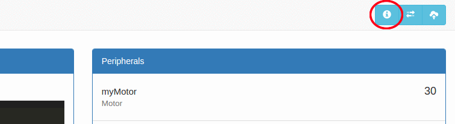

Introduction
Dawn is the software you will use to interface with your robot. It includes a code editor for writing your robot’s code and a dashboard for displaying data from the robot.
NOTE: Windows XP is not supported. Please use Windows 7 or later.
Experimental Dawn
- Version 0.4.6-beta.1 (Windows 64-bit) -- Try this if you have "Runtime Error" issues OR gamepad issues.
Setting up Dawn
- Download the ZIP file of Dawn corresponding to your system by clicking one of the buttons above.
- Extract the ZIP file you just downloaded. On Windows, you can do this by right clicking on the ZIP file and selecting "Extract all" and following the instructions.
- Extracting the ZIP file will create a new folder. Open this folder and find the file "Dawn.exe" (Windows) or "Dawn" (Mac) and double click on it to start Dawn.
- You can move this folder to a different location on your computer if you wish. You can also delete the ZIP file you downloaded.
Beginner's Tour
Dawn has built in interactive guided tour for beginners. You can start the tour by clicking the "Tour" button in the upper-right corner of Dawn (circled in red below).
Documentation
PIE Robot API Documentation:
Documentation for the Robot Application Programming Interface (API), the functions which allow you to control and read data from the robot.
Python 2 Documentation:
Documentation for Python 2, the programming language you will be writing your code in.
Example Code
Driving Example:
Example code for driving a robot using the gamepad joysticks.
Metal Detector Example:
Example code for driving a robot using the gamepad joysticks, and also stops the robot when the metal detector returns a certain value.
Code Competition Template:
Sample competition code that distinguishes between the two competition modes (autonomous and teleop) and checks whether the robot is enabled in both cases.
Robot Updates
Update packages for the robot. These should be uploaded through the "Upload Upgrade" button on the upper-right corner of Dawn. Both the update and signature files are required.